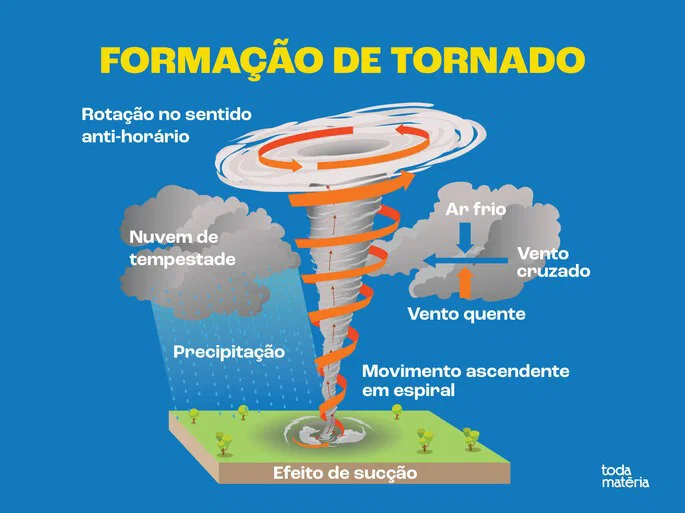

O que é um tornado?
Um tornado é uma coluna de ar que gira muito rápido e liga a nuvem de tempestade ao chão. Ele nasce de nuvens enormes chamadas supercélulas, quando o ar quente e úmido encontra o ar frio e começa a girar.
O diagrama ao lado mostra, passo a passo, como isso acontece.

Como funciona a supercélula
A supercélula é a tempestade mais organizada e mais perigosa. O que a diferencia das outras é que a sua corrente de ar ascendente gira. Essa rotação se chama mesociclone e pode ter de 2 a 10 km de largura. Uma supercélula pode durar várias horas e percorrer centenas de quilômetros.
Corrente ascendente
O ar quente e úmido sobe em alta velocidade, formando uma torre de nuvem que passa dos 10 km de altura.
Rotação
O vento muda de direção e fica mais forte com a altitude. Isso faz a corrente ascendente girar e vira o mesociclone.
Corrente descendente
A chuva e o granizo puxam ar frio para baixo. Ele se espalha pelo chão e ajuda a levar a rotação até a superfície.
Nuvem-parede e funil
Sob o mesociclone surge a nuvem-parede, que baixa. Se a rotação chega ao chão, o funil vira tornado.
Nem toda supercélula gera tornado: só uma parte delas produz. Elas também trazem granizo grande, rajadas destrutivas e chuva forte. No radar meteorológico, aparecem com um eco em gancho, a marca da rotação dentro da tempestade.
Como funciona o ar quente e frio
Os tornados nascem do encontro de duas massas de ar muito diferentes. O ar quente é mais leve e tende a subir. O ar frio é mais pesado e tende a ficar embaixo. Quando os dois se encontram, a diferença de peso e de umidade é a energia que alimenta a tempestade.
🔥 Ar quente e úmido
Fica perto do chão. Vem do mar ou de regiões tropicais, é leve e carrega muito vapor d'água. Ao subir, o vapor vira nuvem e libera calor, o que faz o ar subir ainda mais rápido.
❄️ Ar frio e seco
Fica em cima e vem de regiões polares ou montanhosas. É pesado e seco. Em altitude, move-se muito mais rápido que o ar do chão, e essa diferença de vento cria a rotação.
Como as duas massas viram um tornado
- Instabilidade: o ar quente e úmido acumula energia por baixo de uma camada de ar mais frio, como uma panela tampada. Essa energia é medida pelo CAPE, o mesmo valor que aparece no radar do site.
- Gatilho: uma frente fria ou uma linha de contraste (a dryline) empurra o ar quente para cima e rompe a tampa.
- Subida explosiva: o ar quente sobe de uma vez, forma um cumulonimbus e a tempestade cresce em minutos.
- Cisalhamento: como o vento muda de direção e velocidade com a altura, forma-se um tubo de ar girando na horizontal. A corrente ascendente o levanta e o deixa na vertical, e assim nasce o mesociclone da supercélula.
Por isso os tornados são mais comuns na primavera e no início do verão, quando o ar quente e úmido encontra massas frias que ainda chegam. No Sul do Brasil, o encontro de ar tropical com frentes frias vindas do sul explica boa parte dos casos.
Categorias: Escala Fujita Melhorada
Os cientistas medem a força de um tornado pelos estragos que ele causa. Clique em uma categoria para ver os detalhes e a simulação.
Simulador de destruição
Veja o que o tornado da categoria escolhida consegue puxar do chão. O EF0 só leva coisas leves.
Radar do tempo: previsão de 3 dias
Previsão real de chuva, vento e energia de tempestade para a região escolhida, hora a hora. Dados do modelo Open-Meteo.
Carregando previsão...
Resumo dos próximos dias
Isto é uma previsão de modelo, não o eco de um radar real. Tornados não podem ser previstos com 3 dias de antecedência: aqui mostramos apenas sinais de tempestade forte (CAPE e rajadas). Em caso de alerta, siga a Defesa Civil.
Tornados que marcaram a história
Galeria
Clique em uma imagem para ampliar. Fotos reais do Wikimedia Commons (licenças livres); autores e licenças em imagens/CREDITOS.md.
Quiz: você sabe tudo sobre tornados?
Curiosidades
- 🌎
Os Estados Unidos têm mais tornados do que qualquer outro país, cerca de 1.200 por ano.
- 💨
O vento mais rápido já medido na Terra foi de cerca de 484 km/h, dentro de um tornado em 1999.
- 📍
O Brasil também tem tornados, principalmente no Sul. Em 2015, um tornado atingiu Xanxerê (SC).
- 🌀
Quando o tornado passa sobre a água, ele se chama tromba-d'água.